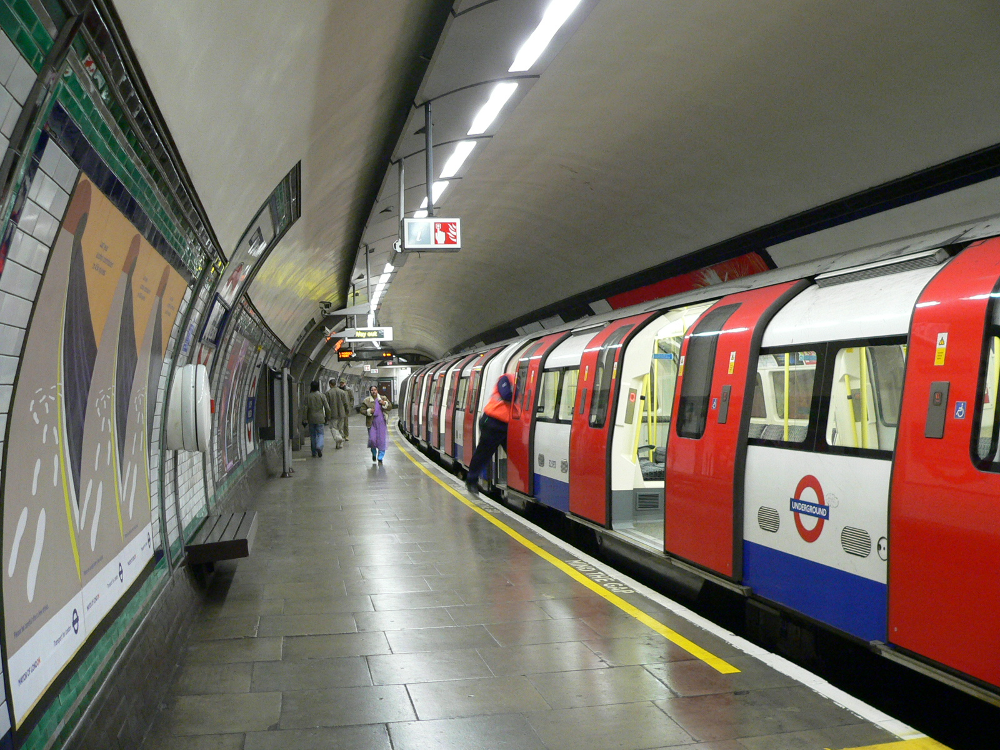

https://github.com/firefoxosedu/offline_app
Telefonica ♥ Mozilla Firefox

Lack of connection can break user experience.
Or even worts, totally lack of any kind of experience!
Lets be aware of our connectivity.
And let's save data locally for further use.
if (navigator.onLine) {
alert('online');
} else {
alert('offline');
}
window.addEventListener('offline', function onOffline() {
// We are offline, warn the user
});
window.addEventListener('online', function onOnline() {
// We got the connection back, perform your
// queued operations
});
Several ways of storing in the client
Pretty simple, but synchronous.
localStorage.myData = 'myValue'; alert(localStorage.myData);
var myDB;
var request = window.indexedDB.open("MyBookShop", 1);
request.onsuccess = function onSuccess(event) {
myDB = event.target.result;
};
request.onerror = function onError(event) {
alert('Sorry, cannot open the DB');
};
// Once opened the connection
request.onupgradeneeded = function onUpgradedNeeded(event) {
var db = event.target.result;
var oldVersion = event.oldVersion;
// Apply any schema upgrade if needed
createSchema(db);
};
function createSchema(db) {
// { 'isbn' : (primary key),
// 'title' : ,
// 'date' : ,
// 'author' : ,
// 'cover':
// }
var objectStore = db.createObjectStore('books',
{ keyPath: 'isbn' });
// Search by title
objectStore.createIndex('title', 'title');
// Search by author
objectStore.createIndex('author', 'author');
}
var transaction = myDB.transaction(['books'], 'readwrite');
transaction.onerror = function() { // Handle error };
transaction.oncomplete = function() { // Handle success };
var objectStore = transaction.objectStore('books');
objectStore.add(book);
var objectStore = myDB.transaction('books').objectStore('books');
var index = objectStore.index('author');
index.openCursor().onsuccess = function(event) {
var cursor = event.target.result;
if (!cursor) {/* We finished */}
// Process each object in cursor.value
cursor.continue();
};
The good parts.
Several smart minds have put some work together around it.
CACHE MANIFEST # version Mon Mar 24 2014 23:23:23 GMT+0000 (GMT) CACHE: index.html icons/60.jpg icons/128.jpg js/app.js js/l10n.js js/links.js js/localforage.js locales/basic_app.en-US.properties locales/locales.ini style/app.css style/images/128.png style/images/60.png NETWORK: * FALLBACK:
{
"name": "My App",
"description": "My elevator pitch goes here",
"launch_path": "/",
"appcache_path": "manifest.appcache",
"icons": {
"128": "/img/icon-128.png"
},
"developer": {
"name": "Your name or organization",
"url": "http://your-homepage-here.org"
},
"default_locale": "en"
}
Packaged apps! They contain absolutely everything on a zip file!